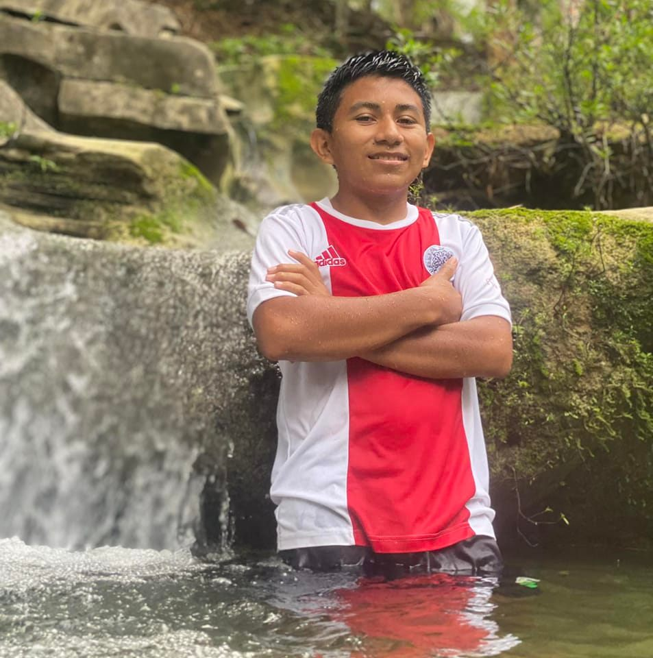

About Me
 Ronaldo Coc is currently a full-time student at the Faculty of Science and Technology, where he’s working towards an Associate’s Degree in Information Technology. He’s eager to gain practical experience through his studies, as he believes this will enhance his career flexibility and opportunities. In his free time, Ronaldo enjoys playing sports, especially football, and has a passion for making music.